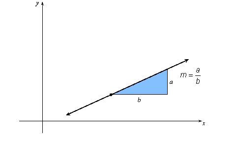
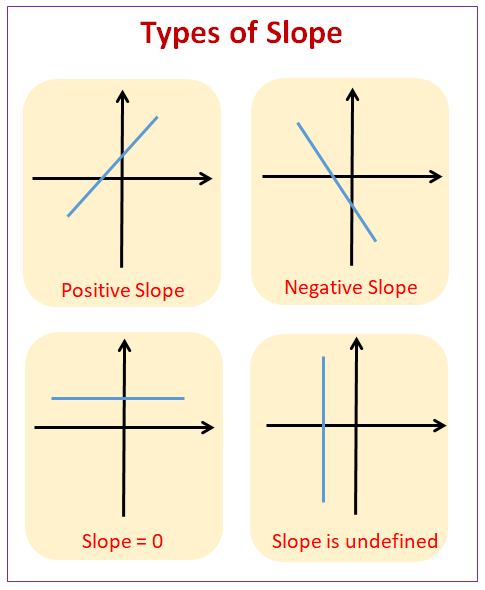
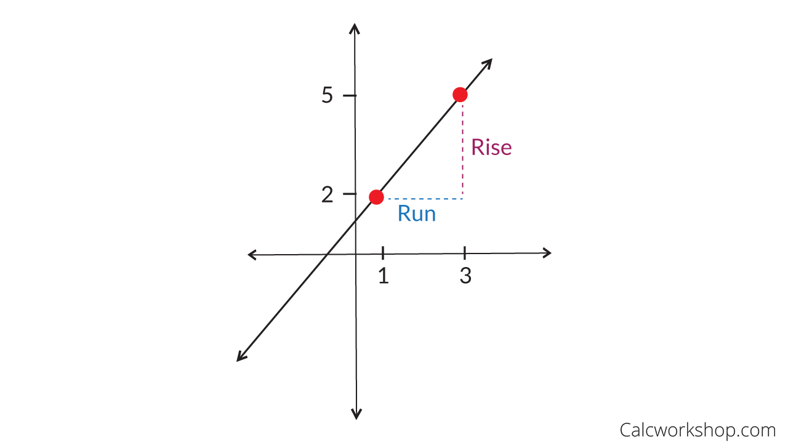
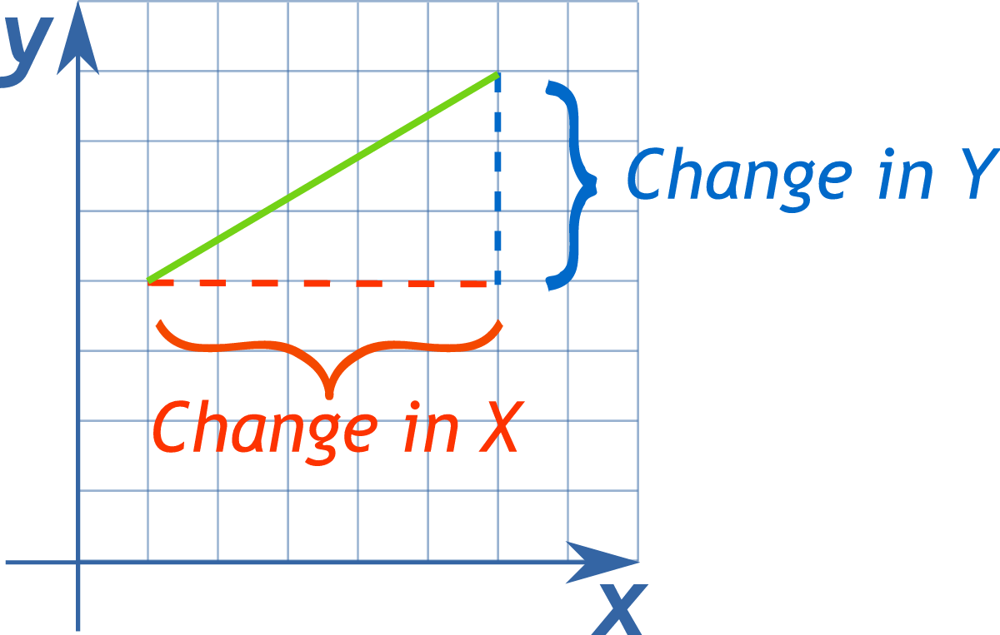

A slope is how steep a line is. It also tells whether the line goes up or down.

Slopes can have different types depending on how they are graphed. They can be:
To identify the type of slope, look at the line from left to right.
| Type of Slope | How to Identify It |
|---|---|
| Positive Slope | The line goes up from left to right. |
| Negative Slope | The line goes down from left to right. |
| Zero Slope | The line is horizontal (flat). |
| Undefined Slope | The line is vertical (straight up and down). |
Take a look at the picture below to see it visually.

Rise over run is a way to find the slope of a line.
Rise tells us how many units we move up or down.
Run tells us how many units we move left or right.
| Movement | Direction |
|---|---|
| Rise | Up or Down |
| Run | Left or Right |
The rise over run formula for slope is:
Example 1:
Suppose a line goes up 3 units and right 2 units.
Rise = 3
Run = 2
Slope = 3/2
Example 2:
Suppose a line goes up 6 units and right 5 units.
Rise = 6
Run = 5
Slope = 6/5

In the example above, the rise is 3 units and the run is 2 units. Therefore, the slope is 3/2.
Try to figure out the slope using the rise / run formula. Click on the answer buttons to see if you are correct!
Slopes are often represented by using the variable lowercase m.
Coordinates have 2 points. To write coordinates:
Here, 4 is the x-value and 5 is the y-value.
Here, 3 is the x-value and -9 is the y-value.
Here, -10 is the x-value and -10 is the y-value.
This formula helps us find the slope between two points.

Example 1:
We have (4,5) and (3,2) as our 2 coordinates. Let's label them.
Here, 4 is x1 and 5 is y1.
Similarly, 3 is x2 and 2 is y2.
When we plug in the formula, we get (2-5) / (3-4).
2-5 is -3. 3-4 is -1. We get -3/-1. The negatives cancel and we are left with 3/1, which is 3.
Answer: The slope of the 2 points is 3.
Example 2:
We have (-4,8) and (2,9) as our 2 coordinates. Let's label them.
Here, -4 is x1 and 8 is y1.
Similarly, 2 is x2 and 9 is y2.
When we plug in the formula, we get (9-8) / (2-(-4)).
9-8 is 1. 2-(-4) is 2+4 which is 6. We get 1/6.
Answer: The slope of the 2 points is 1/6.
Example 3:
We have (3,6) and (-5,-6) as our 2 coordinates. Let's label them.
Here, 3 is x1 and 6 is y1.
Similarly, -5 is x2 and -6 is y2.
When we plug in the formula, we get (-6-6) / (-5-3).
-6-6 is -12. -5-3 is -8. We get -12/-8. The negatives cancel and we are left with 12/8, which is 3/2 in simplest form.
Answer: The slope of the 2 points is 3/2.
Example 4:
We have (-1,0) and (7,3) as our 2 coordinates. Let's label them.
Here, -1 is x1 and 0 is y1.
Similarly, 7 is x2 and 3 is y2.
When we plug in the formula, we get (3-0) / (7-(-1)).
3-0 is 3. 7-(-1) is 7+1 which is 8. We get 3/8.
Answer: The slope of the 2 points is 3/8.
Find the slope of the following:
Take the quiz to see how many slope questions you get correct. Simplify the slope where necessary. If the slope does not exist, write "DNE".